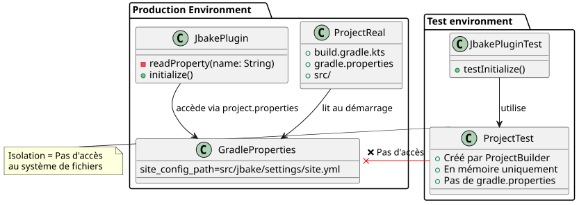
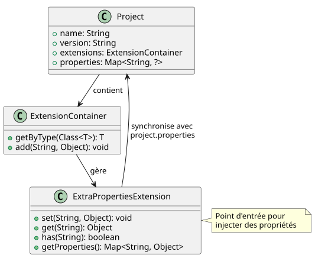
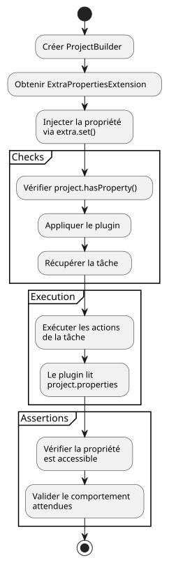
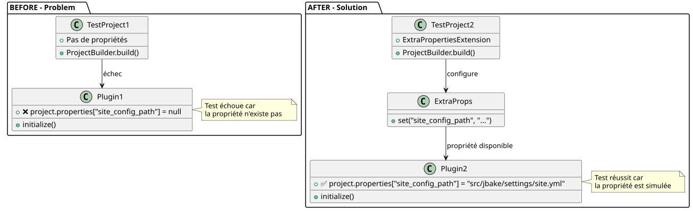
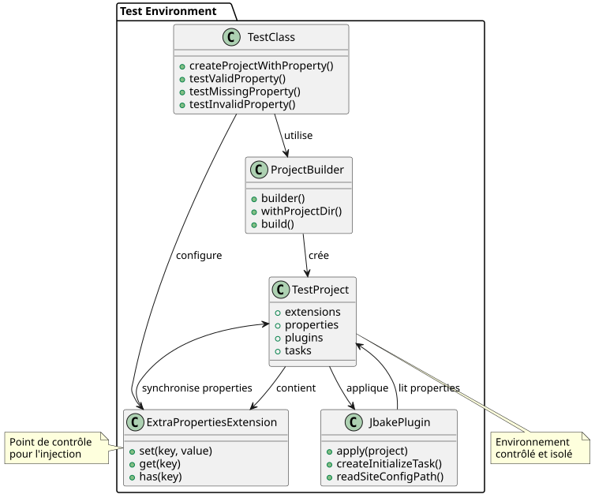

Solving the Gradle Unit Testing Challenge with `gradle.properties`
Published on 13 July 2025
The Problem: Isolating Unit Tests for a Gradle Plugin
When writing unit tests for a Gradle plugin, a common challenge is managing dependencies on project configuration, such as properties defined in the gradle.properties file.`gradle.properties`In our case, the plugin`jbake.ghpages`had to read a property`site_config_path`to function correctly. The unit test for the task`initialize`needed to verify the plugin’s behavior in the presence of this property.
The fundamental problem is that unit tests, by design, must be isolated. Using`ProjectBuilder`from Gradle creates an instance of`Project`in memory, completely disconnected from a real project on the file system. Consequently, this test instance does not automatically read the gradle.properties file`gradle.properties`and therefore has no knowledge of the property`site_config_path`.
Problem Architecture
The following diagram illustrates the disconnection between the test environment and the file system:

The Temptation of a False Good Idea
An initial approach might be to create a dummy gradle.properties file`gradle.properties`in the test resources.
// src/test/resources/gradle.properties
site_config_path=src/jbake/settings/site.ymlHowever, this method is doomed to fail because`ProjectBuilder`is not designed to scan the file system for configuration files. The test would remain isolated and ignore this file.
The Solution: Simulating the Property with ExtraPropertiesExtension
The elegant solution to this problem is not to read the file, but to simulate the presence of the property directly within the`Project`test object. Gradle provides a powerful mechanism for this: extra properties.
Step 1: Understanding ExtraPropertiesExtension
`ExtraPropertiesExtension`is a key-value container attached to every Gradle model object. It allows adding properties dynamically to a project, a task, or any other Gradle extension.

Step 2: Test Setup - Preparation
Let’s start by creating the basic structure of our unit test:
class JbakeGhPagesPluginTest {
@TempDir
lateinit var testProjectDir: File
@Test
fun `check initialize and config yaml file if not existing`() {
// Étape 1 : Créer un projet de test isolé
val project = ProjectBuilder.builder()
.withProjectDir(testProjectDir)
.build()
// Suite des étapes...
}
}Step 3: Property Injection
Here is the detailed process for injecting the property into the test project:
@Test
fun `check initialize and config yaml file if not existing`() {
// Étape 1 : Créer un projet de test isolé en mémoire
val project = ProjectBuilder.builder()
.withProjectDir(testProjectDir)
.build()
// Étape 2 : Récupérer le gestionnaire de propriétés supplémentaires
val extra = project.extensions.getByType(ExtraPropertiesExtension::class.java)
// Étape 3 : Définir la propriété requise pour ce test
extra.set("site_config_path", "src/jbake/settings/site.yml")
// Étape 4 : Vérifier que la propriété est bien injectée
assertTrue(project.hasProperty("site_config_path"))
// Étape 5 : Appliquer le plugin qui pourra maintenant accéder à la propriété
project.plugins.apply("jbake.ghpages")
// Étape 6 : Exécuter la tâche et vérifier son comportement
val task: Task = project.tasks.findByName("initialize")
.apply(::assertNotNull)!!
// Étape 7 : Exécuter les actions de la tâche
task.actions.forEach { it.execute(task) }
// Étape 8 : Assertions finales
assertEquals(
"src/jbake/settings/site.yml",
project.properties["site_config_path"],
"La propriété devrait être accessible dans le projet"
)
}Step 4: Solution Flow Diagram

Step 5: Before/After Comparison

Step 6: Managing Multiple Test Cases
To test different scenarios, let’s create several tests with varied configurations:
class JbakeGhPagesPluginTest {
@TempDir
lateinit var testProjectDir: File
private fun createProjectWithProperty(propertyValue: String?): Project {
val project = ProjectBuilder.builder()
.withProjectDir(testProjectDir)
.build()
// Injection conditionnelle de la propriété
propertyValue?.let { value ->
val extra = project.extensions.getByType(ExtraPropertiesExtension::class.java)
extra.set("site_config_path", value)
}
return project
}
@Test
fun `should work with valid property`() {
val project = createProjectWithProperty("src/jbake/settings/site.yml")
project.plugins.apply("jbake.ghpages")
val task = project.tasks.findByName("initialize")!!
task.actions.forEach { it.execute(task) }
// Assertions pour le cas normal
assertEquals("src/jbake/settings/site.yml", project.properties["site_config_path"])
}
@Test
fun `should handle missing property gracefully`() {
val project = createProjectWithProperty(null) // Pas de propriété
project.plugins.apply("jbake.ghpages")
val task = project.tasks.findByName("initialize")!!
// Le plugin devrait gérer l'absence de propriété
assertDoesNotThrow {
task.actions.forEach { it.execute(task) }
}
}
@Test
fun `should handle invalid property path`() {
val project = createProjectWithProperty("invalid/path/to/config.yml")
project.plugins.apply("jbake.ghpages")
val task = project.tasks.findByName("initialize")!!
// Test du comportement avec un chemin invalide
assertThrows<FileNotFoundException> {
task.actions.forEach { it.execute(task) }
}
}
}Final Solution Architecture

Advantages of this Approach
-
Complete Isolation: The test does not depend on any external file. It is self-contained and can run reliably in any environment (local, CI/CD, etc.).
-
Clarity and Intent: The test explicitly declares the prerequisites for its execution. Anyone reading the test immediately sees that the plugin requires the property`site_config_path`to function.
-
Maintainability: If the property name changes, it only needs to be updated in one place in the test, without having to manipulate test configuration files.
-
Flexibility: It becomes trivial to test different scenarios by simply changing the value of the property injected into each test (valid value, invalid, absent, etc.).
-
Performance: No file reading; everything happens in memory, making the tests faster.
-
Reproducibility: Tests are deterministic because they do not depend on the state of the file system.
Best Practices and Tips
Creating a Utility Method
class GradleTestUtils {
companion object {
fun createProjectWithProperties(
projectDir: File,
properties: Map<String, String>
): Project {
val project = ProjectBuilder.builder()
.withProjectDir(projectDir)
.build()
val extra = project.extensions.getByType(ExtraPropertiesExtension::class.java)
properties.forEach { (key, value) ->
extra.set(key, value)
}
return project
}
}
}Property Validation
@Test
fun `should validate property injection`() {
val project = createProjectWithProperty("test-value")
// Vérifications multiples
assertTrue(project.hasProperty("site_config_path"))
assertEquals("test-value", project.property("site_config_path"))
assertNotNull(project.properties["site_config_path"])
// Vérification que la propriété est accessible par le plugin
project.plugins.apply("jbake.ghpages")
// ... reste du test
}Conclusion
Rather than struggling to make a unit test environment read configuration files, the best practice is to simulate the required state. Using`ExtraPropertiesExtension`to programmatically define Gradle properties is the cleanest and most robust method for performing effective and reliable plugin unit tests.
This technique transforms an external dependency problem into a simple dependency injection, at the very heart of the Test-Driven Development (TDD) philosophy. It offers total control over the test environment while maintaining the isolation necessary for high-quality unit tests.
The diagrams and examples presented in this article show how this approach can be implemented progressively and methodically, allowing for the creation of a robust and maintainable test suite for your Gradle plugins.